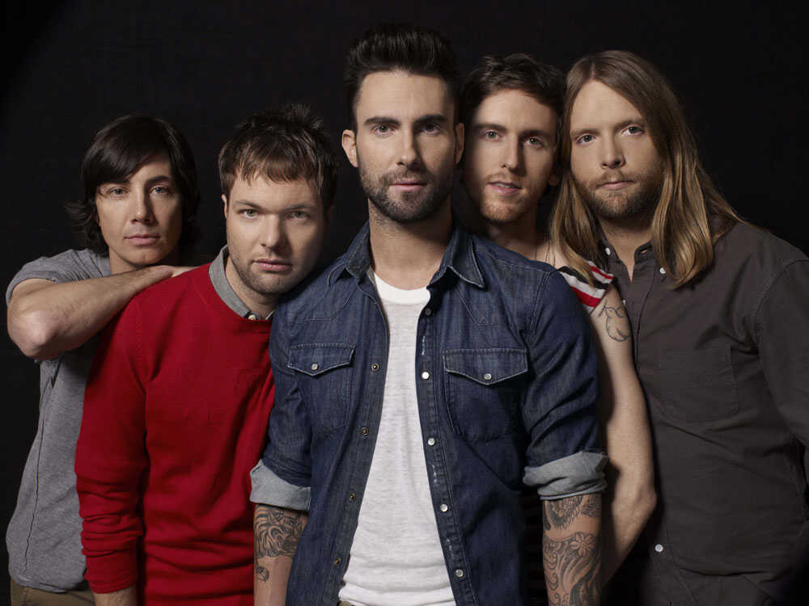
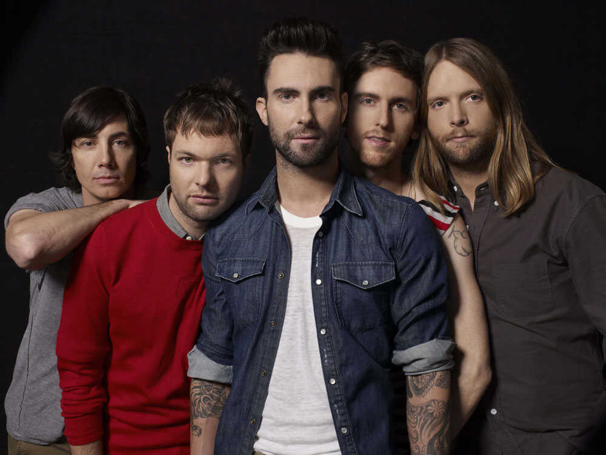

History of Pop Music
Pop music originated in the United States and Great Britain during the late 1940s and early 1950s. It evolved from a blend of various music styles, including jazz, swing, blues, and country. The genre gained popularity due to its catchy melodies, relatable lyrics, and simple musical arrangements.
How did pop music evolve over time?
Pop music has evolved significantly over time, adapting to changing musical trends and cultural influences. It has absorbed elements from different genres, such as rock, soul, R&B, disco, hip hop, and electronic music. This evolution led to the emergence of various subgenres and hybrid styles within pop music, reflecting the diversity of contemporary music.
How did pop music impact popular culture?
Popular culture has been significantly influenced by pop music. It has had a major role in influencing youth culture, fashion, and trends. Pop songs frequently capture the social and cultural ideals of the period, turning into anthems that connect with listeners and inspire cross-cultural dialogue. In addition, pop music has inspired dance, film, and advertising, among other art forms.
 
